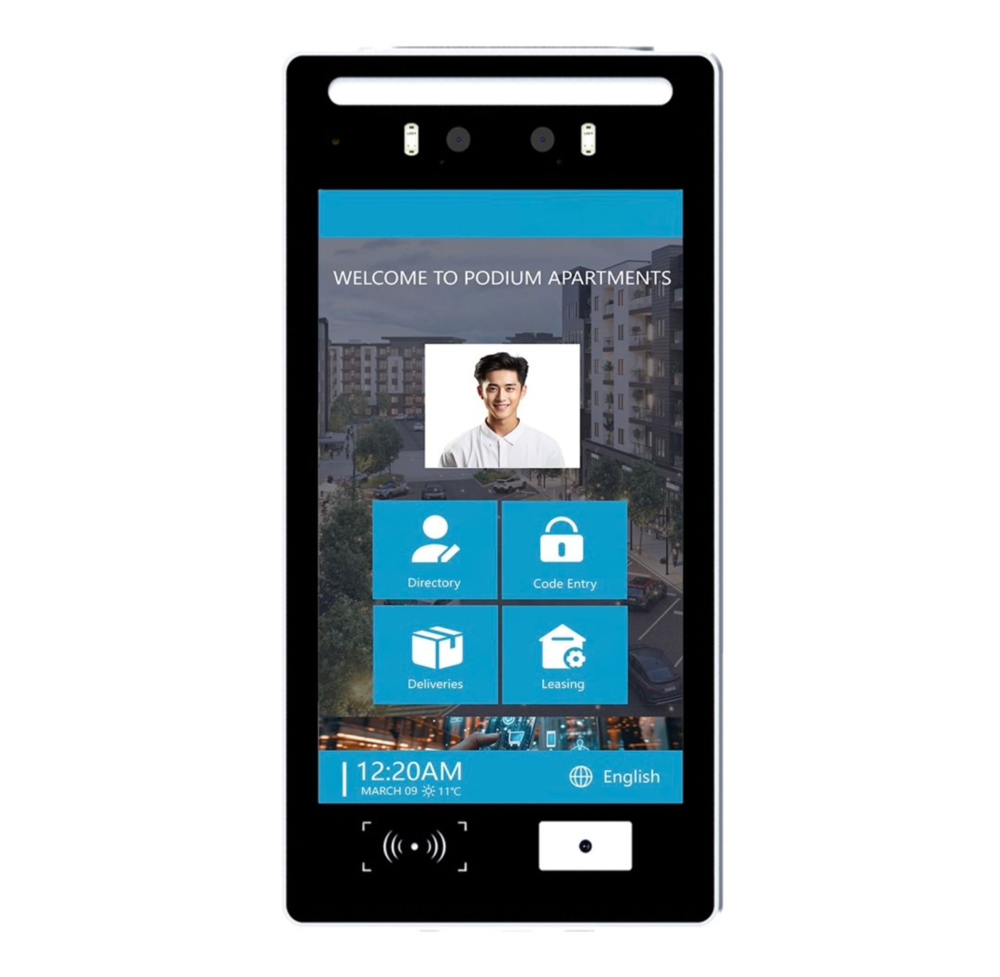

LT One
Вхідна панель із сенсорним екраном 8 дюймів, інтеграцією ШІ та підключенням через Wi-Fi, LTE або кабель LAN.
- 🖥️ Екран біля входу
- Сенсорний екран 8″
- 🤖 Штучний інтелект
- Інтеграція ШІ із системою
- 📹 Спостереження біля дверей
- Відеоспостереження біля дверей (відеодомофон)
- 🌐 Мови
- Широкий вибір мов
- 🔓 Розпізнавання обличчя
- Face ID
- 📶 Підключення
- Wi-Fi, LTE та кабель LAN
- 💳 Картки доступу
- NFC для карток доступу
- 💧 Водостійкість
- IP65
- ❄️ Захист від холоду
- Морозостійкий
- 🔧 Встановлення
- Просте встановлення в будівлі
- ⚡ Живлення
- Звичайний блок живлення або PoE